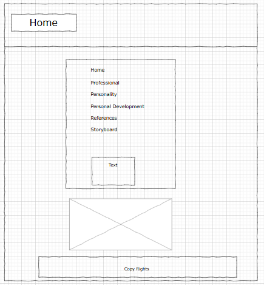
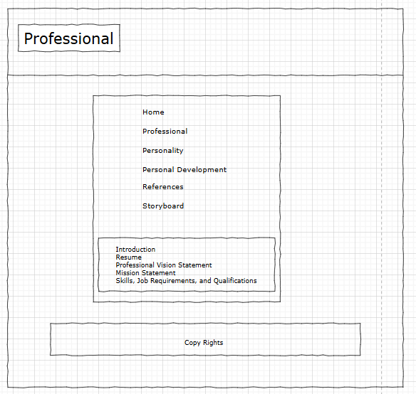
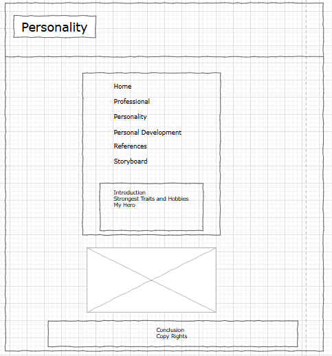
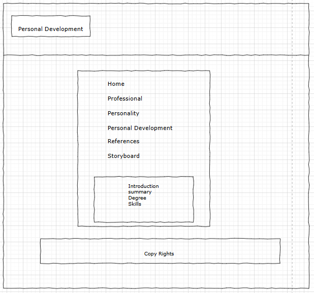
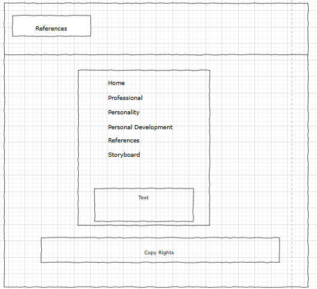
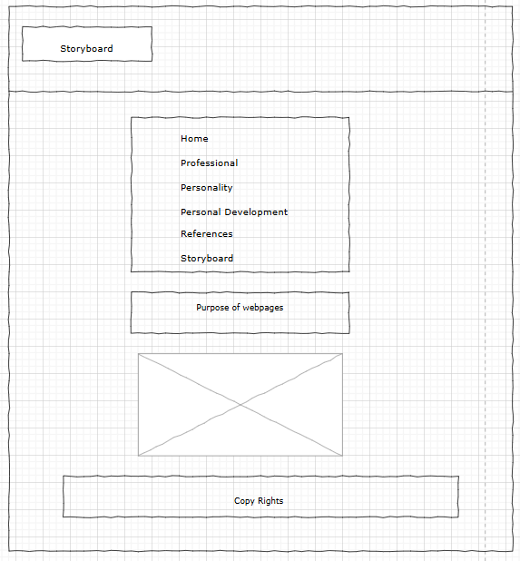

Storyboard
Web Pages and Intent
List of web pages and their purpose:
- Home: Introduction and overview of the website.
- Professional: Professional background, resume, vision, mission, and skills.
- Personality: Personal interests and hobbies.
- Personal Development: Goals and progress in personal development.
- Reference: References and testimonials.
- Storyboard: Layout design and purpose of each webpage.
Wireframe
A drawn layout design for the pages:
Home

Professional

Personality

Personal Development

Reference

Storyboard
